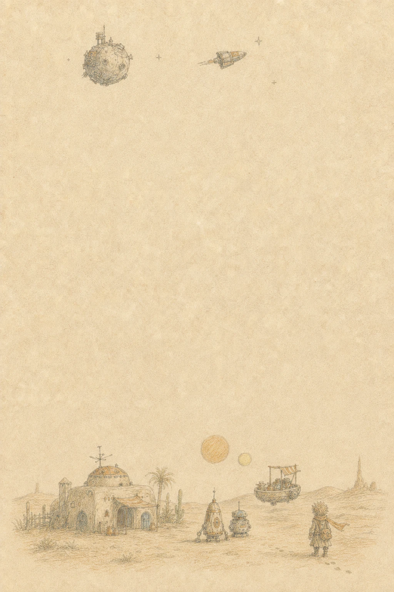

01 / Android
Parcel on Map
Turns a parcel journey into an animated route. I built the multi-module Compose flow, map camera behavior and lifecycle-safe animation state.
Source ↗Open to Senior Android opportunities
Senior Android Developer
I build reliable mobile products and take complex features from technical design to production. My focus is clear architecture, responsive interfaces and measurable product behavior.
Pet projects - experiments with different stacks and technologies.
01 / Android
Turns a parcel journey into an animated route. I built the multi-module Compose flow, map camera behavior and lifecycle-safe animation state.
Source ↗
Kotlin Multiplatform03 / KMP
Turns remote Star Wars data into an explorable offline graph. I designed the shared KMP architecture, typed persistence and database-first data flow.
Source ↗Knowledge base
A bilingual practical reference for Android, Kotlin, Compose, architecture, testing and performance.
Android / Media3
A native Android companion for the Handbook, designed for bilingual educational playlists, streaming playback and media controls.
Unity / Game
An atmospheric narrative game where I build reusable mini-games, animation systems and progress persistence.
Product work from my CV, from mobile games and logistics to fintech, fitness and IoT.
2023 - 2026
TLM
Worked on iRobot Home: live maps, 2D/3D rendering, map editing and real-time robot state. Owned complex features from technical design through production reliability.
2022 - 2023
Sweatcoin
Delivered cross-platform product features for Android and iOS. Reduced loading time on a complex screen by about three times through request optimization and parallel loading.
2021 - 2022
Ready for Sky
Built a multi-module IoT application with backend-driven Compose UI and BLE device flows, while modernizing legacy code and introducing snapshot testing.
2020 - 2021
Dejavoo Systems
Built an application store for distributing software and updates to Android POS terminals used by cafes and restaurants, and maintained a legacy product with C++ libraries.
2018 - 2020
Improve Digital
Delivered white-label banking applications, smart-home integrations for climate systems and locks, and an Android Wear companion app.
2016 - 2018
MS TEAM
Worked on embedded automotive software and map-based applications for real-time vehicle and service tracking in on-demand logistics.
2014 - 2016
Sibers
Built a reusable cross-platform mobile game engine and delivered multiple game variants from the shared foundation.